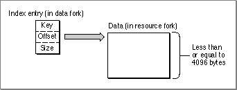

Legacy Document
Important: The information in this document is obsolete and should not be used for new development.
Important: The information in this document is obsolete and should not be used for new development.


The Structure of a Dictionary
A dictionary is a collection of dictionary records. Each dictionary record consists of a key and some associated data referenced by that key. A key is a Pascal search string with a maximum length of 129 bytes (including the length byte). The data associated with a key has a maximum length of 4096 bytes.The key for a dictionary record is stored separately from its data. The key, an offset to the data, and the length of the data make up the record's index entry. The index entry is stored as a B*-tree structure in the data fork of the dictionary file. The data is stored in the resource fork of the file; the Dictionary Manager accesses the data with Resource Manager partial resource routines. When a dictionary lookup is needed, the Dictionary Manager uses the key to find the location and size of the data in the resource fork. Then, it uses a partial resource reading to read the data into memory. (Routines for reading partial resources are described in the Resource Manager chapter of Inside Macintosh: More Macintosh Toolbox.) Figure 8-1 shows the general format of a dictionary record.
Figure 8-1 General format of a dictionary record
- Note
- Always use Dictionary Manager functions to gain access to records in the resource fork rather than examining them directly with Resource Manager routines.

 Each key-data pair is unique in a dictionary. No two keys in a single dictionary are identical.
Figure 8-2 shows the format of the data associated with a dictionary key. The first byte, which specifies the total number of entries in the data, is followed by a series of entries. Each entry has a maximum length of 256 bytes.
Figure 8-2 Format of data associated with a key
A dictionary entry in the data associated with a key contains raw data plus optional attributes. Raw data consists of any information related to the key entry. In a general dictionary it might be an explanation of the key; in a given East Asian dictionary it might be all the Chinese characters with the pronunciation of the key. A data attribute contains some information about the raw data--for example, grammatical or context-sensitive details, plus an attribute type. The attribute type is an integer constant in the range -128 to 127. The currently defined attribute types are listed on page 8-27.
Figure 8-3 shows the format of an entry. If data attributes are present, the first two bytes in each data attribute are the attribute size and the attribute type.
- Note
- Apple reserves all negative attribute types. Positive attribute types are available for the use of developers of applications and text service components.
Figure 8-3 Format of an entry in the data associated with a key
Depending on the script system, the key, raw data, and attributes may differ.
- In a record in an English dictionary, a key is any word; raw data is one or more definitions of the word; and a data attribute is the type of speech of the key--for example--verb, noun, adverb, adjective, or a combination of these.
- In a record in a Japanese dictionary, a key is a symbol of the phonetic subscript Hiragana; the associated raw data are the Kanji (ideographic characters); and the data attributes include the parts of speech or input method-specific attributes such as homonyms or groupings (clauses) of Kanji.
- In a record in a Chinese phonetic dictionary, a key is one of the phonetic symbols of Bopomofo; raw data is one or more Chinese words with the same pronunciation as the key; and there may be no associated data attributes.
- In a record in a Korean dictionary, a key may be a syllable or word in the Hangul subscript; associated raw data may be one or more Chinese words with the pronunciation of the key; and there may be no associated data attributes.